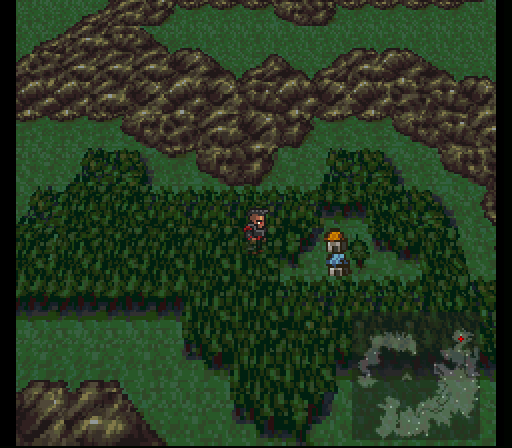
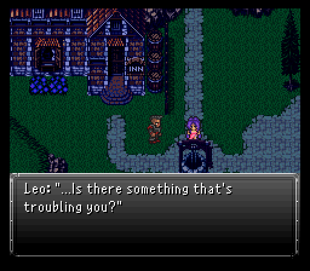
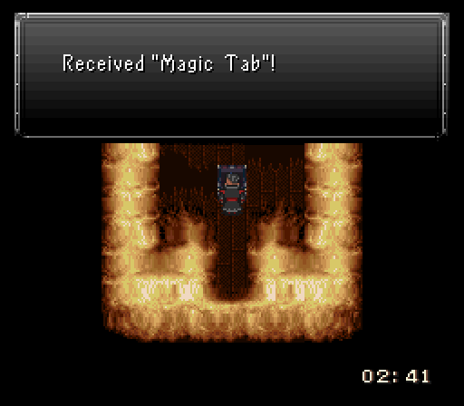
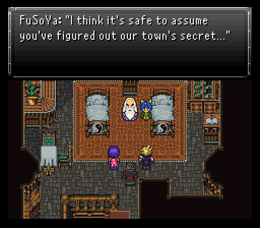
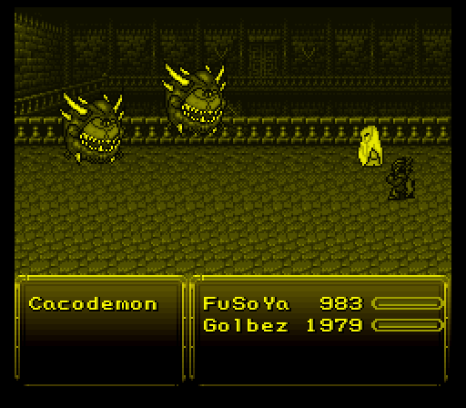

Part 16: The Roof is on Fire
The forgotten town:
The team's landed on the shores of Lemuria. Tifa's out of the party and recently awakened from his slumber Oboro is in. They merely have to go a short distance northeast to reach a town, one we've visited in the past to collect some items.
First thing to do is to check the shops in town. Somehow now you can start buying stuff from them. Considering the team's still essentially strangers, it seems a little odd, but I'm not complaining.
The weapon shop has buyable elemental rods in fire, ice, and lightning varieties and a few other weapons. Nothing you absolutely need right now except maybe an Ice Rod or two.
The armor shop though has far more desirable pickups. Buyable Rubber Shields & Aqua Gears for one which means you should try to get enough of each to fit a team of four. Tiaras, Galaxy Scarves, and Arcane Robes aren't half bad either with some good magic boosts on them.
The item shop has buyable Tinctures. Being able to quickly refresh 125 mp for the whole team is pretty damn solid so if you can, buy a few for emergencies.
The relic shop sells nothing new that you haven't seen before, but they're all good pickups if you have any spare funds.
When you're ready to advance the story, check out the house north of the town square. Inside is a rather...familiar old man. If you've played Final Fantasy IV extensively, then you'll know this old man is FuSoYa.
He doesn't seem to know much about the espers, but I'd reckon Eiko does as that's exactly who comes barging into the room during the convo, but quickly gets kicked out by whom she calls grandpa.

Once it's realized this lead isn't going anywhere, the party has to decide on a new plan of action. You'll have to rest up at the inn to advance the story, but luckily it now only costs 1 gil to do so. Make sure Oboro gets an Ashen Cowl and a pair of Oracle Rings at a bare minimum. Maybe one Oracle Ring & a Pod Bracelet if you want to play it safe. Also, if you didn't already, there are two small events you can trigger on each side of FuSoYa's house.
During the inn stay, Aurora & Leo have another one on one chat talking about love...complete with Aurora's bad feeling senses about Gestahl going off. Turns out she's gonna be right about those, but there's also another problem that's arisen...Eiko's gone to play in the eastern house and it's caught fire. FuSoYa comes rushing over to the team requesting help. While you can follow him, go save outside real quick.
Demonic blaze:
Time to go help FuSoYa. He's trying to douse the flames, but is not having any luck. Even with the help of the other townsfolk, the flames will not die down. Folks, this is why you don't stash ALL of your Fire Rods in one place!
With no other option available, FuSoYa decides to charge into the house to save Eiko, but he's also getting help from Cloud, Aurora, and Leo.

FuSoYa, as you'd probably expect, is at his prime when casting spells. With a spell selection that rivals Aurora, he can dish out the magical damage like nobody's business. His Arcane command is Strago's Lore from vanilla basically. He does get to begin with a few select moves in it, the most important being Tsunami which everything in this area is going to be weak to.
Also equip the Cryogen weapon if you bought one or more back in Fraust on either Aurora or FuSoYa, and give the Icebrand to Cloud.
While you could fight every Bomb you see, you're on a timer. You'll have 9 minutes and 15 seconds to reach the boss of this area and start the fight with it. Thankfully, the Bombs fall to a casting of Tsunami with Aurora backing it up via summoning Leviathan. If they need further beatdowns, Cloud & Leo can mop up no problem.
Only a couple items to grab here, but both are good (Fire Rod & Magic Tab). You won't be able to enter this area after finishing it though so make sure you get both items before you head up a set of stairs since the boss of the area is up said stairs.
This boss? Allegedly an evolved form of the Bomb, a Lava Demon. Hell if I know how that works, but we may as well expel the demon.

Lava Demon is basically FlameEater from vanilla, except it's weak to water instead of ice. It opens by summoning four Bombs, all easily dispatched with a Tsunami & Leviathan combo. It can resummon these Bombs though so you may need a little extra help to drop the buggers in one round. It can also summon a Hellspawn after some time and use Death Roulette, which randomly selects an ally or monster for death, and at this point in the game we have nothing to protect against instant death effects. FuSoYa can learn it as one of his Arcane spells, if he is alive when it is cast.
When it's not summoning, Lava Damon is hitting the team with Fireball & Scorch. Nothing to worry about on either end, but it also has Flare after being hit with water elemental attacks a few times. This can nail a single target for 1400-1500 damage while ignoring defenses. Pretty nasty, but since it's single target, you can just devote or one two people to getting the targeted character back in shape.
If a message pops up saying that its flames are growing stronger, it will begin to regen hp. You can remove this effect by using either a water-elemental attack or an Aqualin on it.
At some point, if it hasn't yet been killed, the Lava Demon will cast Protect and Reflect on itself and begin bouncing either Scorch or Inferno off itself and onto the party, which cannot be re-reflected. Clever girl... But with all the damage the team can dish out, the demon doesn't last long.
Eiko's in the back, but apparently rogue Bombs decide to sneak attack the party, leaving Leo the only one that can still fight. Luckily, Oboro snaps out of his second siesta to crash the party and try taking down the flames...but even he is having issues. That's when Eiko's protector Moggie steps on to the scene and joins Leo & Oboro for a battle gauntlet that's five fights long. Thankfully our characters' status and hp is restored after each battle, so we don't have to worry about that.

First fight...hope you didn't miss Lava Demon's presence because it's back for an encore battle. While not having Aurora or FuSoYa hurts in dealing with the summoned enemies, Oboro having dual Oracle Rings means he can drop them all in two Water Scrolls.
Leo should be on buffing & healing duty, though his Blaster skill may come in handy when dealing with the bombs, with the chance to instantly remove them. His regular attack is stronger against the Lava Demon than Frozen Beam, so do that instead whenever the opportunity arises.
As for Moggie, they come equipped with an Ice Rod and a prized Star Shield. Inverse when used against the Lava Demon casts either Splash or Flood, which is of course its elemental weakness and will stop its hp regen if need be. The mysterious moogle also has a new skill up to this point, Call, which summons a random esper, opening the door to all sorts of possibilities. It shouldn't take that long to put the demon down once more.

The next battle is much simpler with four Bombs in a pincer attack.
The fight after that is against two Bombs & two Hellspawns. The latter like to use Toxic Bomb quite a bit which is really annoying, but they're weak to water all the same.
Then a battle against six bombs.
Battle #4 is the easiest with just 3 Bombs.
After the battle gauntlet, it turns out even Leo & Oboro collapse from the intense heat. Moggie's still alive and kicking though and is able to warp everyone out of the house.
Ancient history:
The team has made it back safely to FuSoYa's house with Eiko coming to. She then spills the beans about the Lava Demon. Turns out she KINDA accidentally summoned it. Clearly she needs more points into her summoning skill, heh.
FuSoYa then spills the beans about the town's secret. As it turns out, this town is known as Lunaris, home of the Lunarians who are basically guardians of the planet. The Lunarians fled to the planet this game takes place in after some lovely experiences with the planet called "Earth".
The bad news...they may have never settled here if they knew about the hellish wars to follow, namely the Magi Wars. Turns out the Lunarians sided with the espers against the humans wanting the power of the espers for the sake of the planet, but the damage had been done. Too much negative energy released during the war released the archdemon known as Zuriel from the Void.
Despite the Lunarians being able to quell Zuriel's wrath and defeat him, it was done without the assistance of the espers who fled to a secret realm beyond the Dimensional Gateway. Turns out the humans didn't take kindly to the Lunarians helping the espers out either. Couple that with the Lunarians being adept at magic and you have a bunch of idiot humans deciding to hunt down the Lunarians. Only a few survived and fled to what is now Lunaris.
Also of note...Moggie. Turns out its really an esper, Madeen, who wanted to stay by Eiko's side without scaring her, hence the Moggie alter ego. He then tells FuSoYa it's time to lend our team their powers which triggers a flashback.

This flashback takes place back when Zuriel was on a rampage, destroying anything and everything he came across. FuSoYa was trying to mount a counter offensive to push back his armies, but he's not alone. FuSoYa had his trusty partner in crime Golbez alongside him to defend the castle.
Deeper in the castle, it seems as though many espers fled the castle in fear of Zuriel turning them into Magicite. His end goal was to locate some mysterious statues, break their seal, and bring in an apocalypse. Only the Holy Knight Draco is left to protect King Alister, and he does so by bisecting a demon and smiting down a naga monster that pops up from the sewers.

Only one notable esper stayed behind to combat Zuriel's army, Odin. Even his power was no match when Zuriel himself showed up and basically kicked his rear by beginning the conversion to magicite.
Where were FuSoYa & Golbez during all this? Coming in to do some demon cleansing of the castle. Despite this being a flashback, you get to control the duo in a pair of battles. The first are against Hell Barons which, if it doesn't ring a bell...Doom is getting representation here. Decent kick to their attacks, but nothing the duo can't handle.
The second battle? Basically hard confirming the Doom representation with a pair of Cacodemons. Again, nothing too threatening, but Golbez makes use of his unique command Torment to take control of one Cacodemon. This allows him to select an action from the controlled enemy which is usually a normal attack, their special move, and one or two other attacks. In this case, Cacodemons have Life Purge which they can be hit by. One casting will put them in range to be killed by a couple spells from FuSoYa.
Note: You can lose these battles and the story will still progress.
After the fights, they reach Odin, but it's too late. The magicite transformation process is too advanced and Zuriel's basically going down to kill the king and everyone in the area. There's still hope though if the duo survives so Madeen warps them and the other survivors to safety, ending the flashback.
The flashback also apparently kickstarted FuSoYa's magical prowess. He now unlocks a ton of new spells, most of which the party won't have access to for quite some time like tier 3 spells and Hastega/Slowga.
Back in the present time, everyone's outside of FuSoYa's house ready to go find the espers. Leo's heading back to the ship to report to the others while the rest go investigate a place called the Solace Cavern which is rumored to have strong ties to magic. Perhaps the espers have retreated there?